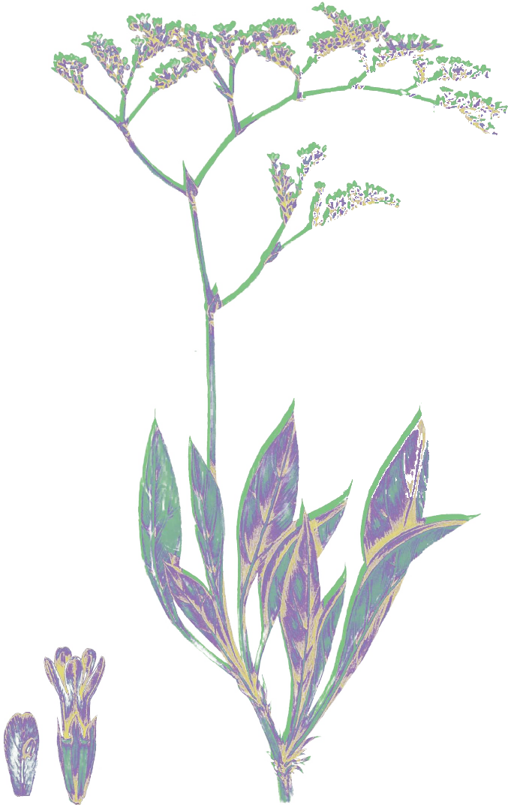
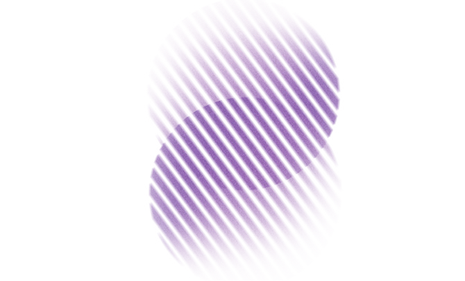

Parco Regina, quadrante XC9-a
Radicamento
Augusta 2076
Tieni premuto il cerchio
per attivare il dispositivo
Meglio con le cuffie. Dura circa 15 minuti.
Introduzione
Il quadrante XC9-a è tuo
Ti è stato affidato il quadrante XC9-a del Parco Regina. Questo dispositivo ti aiuterà a creare un rapporto simbiotico con esso.
Da quando sei arrivato, la tua pianta ha iniziato a produrre un suono. Con il tempo imparerai ad ascoltarlo e a capirlo.
A qualsiasi livello, dal microscopico al macroscopico, sono le comunità intese come relazioni fra viventi che permettono la persistenza della vita.
Storia della fine
Augusta, dal 2027 al 2075
La vecchia Augusta era una città sacrificata e ammalorata. Scorri per vedere come è rinata.
-
2027
L’abbandono
L’estate più calda mai registrata. Gli impianti petrolchimici cedono e i composti tossici raggiungono la falda. La bonifica viene abbandonata.
-
2035
I primi semi
Una nuova generazione occupa le terre dell’ex ferrovia. Capisce che da quel luogo dipende la vita della città.
-
2050
La rivolta verde
Augusta si dichiara indipendente. Distese di piantagioni la proteggono. Nessun capo, nessun ordine: tutto nasce come un germoglio dal cemento.
-
2075
La nascita del parco
Sulle rovine industriali nasce il Parco Regina. Oltre centocinquanta specie filtrano il calore e trattengono l’umidità.
Senza di loro, Augusta non esisterebbe più.
Il fattore terreno
Cinquant’anni sotto il Parco
Il suolo è la memoria della città: trattiene ciò che gli è stato versato sopra. A risanarlo sono le radici, stagione dopo stagione.
La tua pianta
Limonium narbonense Miller, 1768

- Nome comune
- Statice selvatica
- Famiglia
- Plumbaginaceae
- Habitat
- Coste salmastre del Mediterraneo
- Carattere
- Resiste a sale e siccità
Questa è la pianta che ti è stata assegnata. Con il tempo imparerai a leggere ogni sua necessità e a entrare in simbiosi con lei.
Ascolta la pianta
Quando il tuo Limonium fiorirà per la prima volta, la terra sotto di lui starà tornando a respirare.
Il rituale
Quattro tappe, una dopo l’altra
L’osservatorio è un luogo di ascolto e pazienza. In ogni tappa ti fermi e segui i gesti sullo schermo.
Tappa 1 di 4

Respira
Cerca questo segno nello spazio.
Tappa 1 di 4
Respira
Benvenuto tra i custodi
Il rito è compiuto
Un suolo inquinato per decenni non si risana in mesi: ogni visita è un contributo. Misura in stagioni, non in giorni.
Guardando la tua pianta vedrai che la vita trova sempre una strada. E forse imparerai qualcosa su te stesso: resistere, adattarti, radicare.
Il futuro inizia da qui.
Il collettivo verde
31 dicembre 2075
Le tue annotazioni
Restano salvate solo su questo telefono.
Radicamento è un progetto di Speculative design del corso di Progettazione grafica per il territorio, Accademia di Belle Arti di Catania, a cura di Marco Lo Curzio ed Elisa Raciti. Progetto di Fabio Finocchiaro e Roberta Trapani.